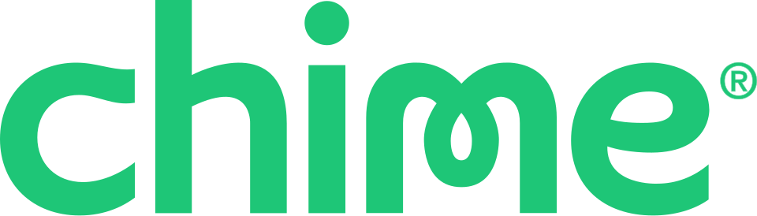
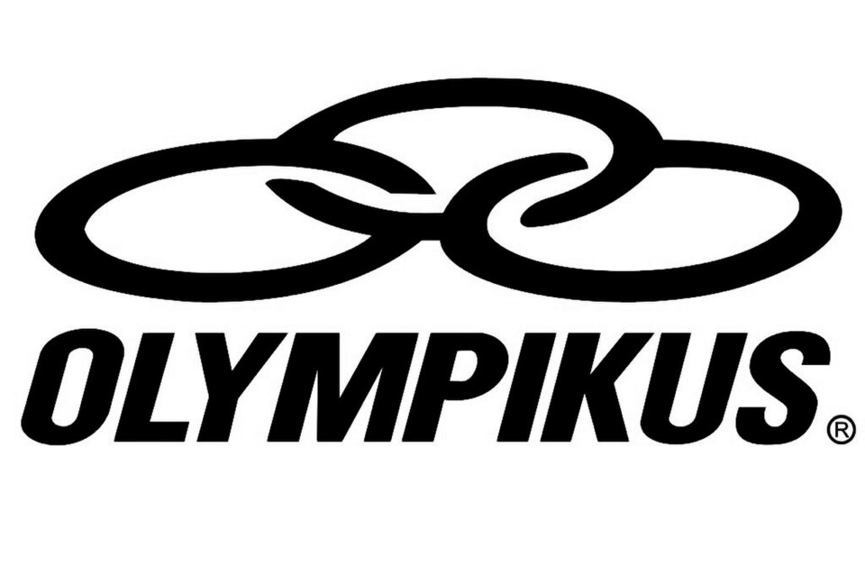
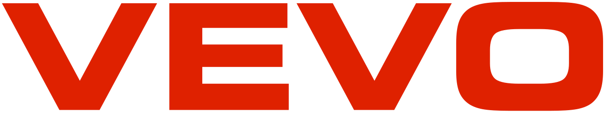

홈 > 브랜드 매거진 > Robinhood
Robinhood
로빈후드(Robinhood Markets)는 2013년 블라디미르 테네브와 바이주 바트가 설립한 미국 핀테크 기업으로, 수수료 없는(commission-free) 주식·ETF 거래를 모바일 앱으로 제공하며 개인 투자자의 시장 접근성을 낮춘 것으로 알려져 있다. 현재 나스닥에 HOOD로 상장돼 있으며 본사는 캘리포니아주 멘로파크에 있다.
산업 분야 브랜드·비즈니스 · 공개 등급 편집 검수 · 브랜드 평가 4 ★
한눈에 보는 브랜드
로빈후드(Robinhood Markets)는 2013년 블라디미르 테네브와 바이주 바트가 설립한 미국 핀테크 기업으로, 수수료 없는(commission-free) 주식·ETF 거래를 모바일 앱으로 제공하며 개인 투자자의 시장 접근성을 낮춘 것으로 알려져 있다. 현재 나스닥에 HOOD로 상장돼 있으며 본사는 캘리포니아주 멘로파크에 있다.
브랜드 관점
핀테크 미니멀리즘을 대표하는 시각 체계로, 깃털 심볼이 속도·민첩함·접근성을 응축한 핵심 자산이다. 2024년 포르토 로샤(Porto Rocha)가 주도한 리브랜딩은 깃털에서 군더더기를 덜어내 더 매끈하게 다듬고, 그 안에 숨겨진 상향 화살표를 강조해 성장과 전진의 서사를 시각화했다.
컬러는 경쟁사들의 무지개식 다채로움 대신 검정·흰색·중성 톤을 기조로 삼고, 여기에 로빈 네온(Robin Neon)이라 명명한 형광 옐로그린을 포인트로 배치했다. 초기의 민트 그린을 이 전기적 색상으로 교체해 성숙한 금융 플랫폼다운 절제와 긴장감을 동시에 확보했다.
전용 산세리프 로빈후드 포닉(Robinhood Phonic)은 섬세한 잉크트랩으로 정밀함을 유지하면서 개성을 더해, 스크래피한 도전자에서 성숙한 브랜드로 이행하는 정체성 전환을 활자 차원에서 뒷받침한다.
시작과 성장
2013년 4월 스탠퍼드 동문인 블라드 테네브(Vlad Tenev)와 바이주 바트(Baiju Bhatt)가 공동 설립했다. 두 사람은 이전에 고빈도 트레이딩 관련 사업을 운영하며, 월스트리트 대형사는 사실상 무료로 주식을 거래하는 반면 일반 미국인은 한 건당 7~10달러의 수수료를 부담하는 구조적 불평등을 목격했다.
이 격차를 허무는 것이 창업 동기였고, 모바일 우선·수수료 무료 거래라는 비전으로 구체화됐다. 출시 전부터 가입 대기 명단 마케팅으로 화제를 모아 2014년 약 100만 명의 대기자를 확보했고, 2015년 3월 정식 앱을 공개했다.
수수료 무료 모델은 젊은 세대를 중심으로 빠르게 확산되며 전통 증권사 업계에 충격을 주었고, 이후 동종 업계가 수수료 폐지를 뒤따르게 만든 분기점이 되었다.
브랜드 아이덴티티
2024년 뉴욕 스튜디오 Porto Rocha가 진행한 리브랜딩은 'fintech 동질화 속에서 less is more'라는 콘셉트로, 신생 도전자에서 성숙한 투자자를 겨냥한 금융 플랫폼으로의 진화를 표방했다. 상징인 깃털(feather) 마크는 단순화되어 그 안에 숨은 상승 화살표를 강조하도록 다듬어졌고 워드마크 글자꼴도 정돈되었다.
서체는 잉크트랩이 특징인 커스텀 산세리프 Robinhood Phonic과 헤드라인용 세리프 Martina Plantijn을 병용한다. 색상은 경쟁사들의 무지개식 팔레트에서 벗어나 블랙·화이트와 성숙한 중성색을 기조로 하고, 여기에 고유의 전기빛 옐로그린 'Robin Neon'을 새 강조색으로 더했다.
제품과 서비스
수수료 무료 주식·ETF 거래에서 출발해 옵션과 암호화폐 거래로 영역을 넓혔다. 암호화폐는 별도 법인 로빈후드 크립토를 통해 제공한다.
월 구독형 멤버십 로빈후드 골드(Gold)가 프리미엄 축을 이루며, 2024년에는 골드 카드(Gold Card)와 은퇴계좌(IRA)를 더해 라인업을 확장했다. 골드 구독자에게는 IRA 연간 기여금 3% 매칭, 신규 입금에 대한 1% 부스트 등 혜택을 제공한다.
사람들
현재 상태
2021년 7월 나스닥에 티커 HOOD로 상장한 공개기업이다. 공모가는 주당 38달러였다.
상장 직전인 2021년 1월에는 게임스톱(GME) 밈 주식 사태 당시 청산소 담보 요건을 맞추지 못해 매수를 일시 제한했고, 이 조치는 의회 청문회와 규제 조사를 불렀다. 이후에도 거래·구독·암호화폐를 아우르는 종합 금융 플랫폼으로 사업을 확장하고 있다.
타임라인
BI/CI 변천사
함께 읽을 브랜드
Te
Ten
브랜드·비즈니스 · 편집 검수TenTen는 2025년에 기록된 Designed by Paul Belford Ltd 계열의 브랜드 아이덴티티 사례입니다. Paul Belford Ltd가 아이덴티티 작업...
PA
PAC NYC
브랜드·비즈니스 · 편집 검수PAC NYCPAC NYC는 2024년에 기록된 Designed by Porto Rocha 계열의 브랜드 아이덴티티 사례입니다. Porto Rocha가 아이덴티티 작업의 디자이너...

브랜드·비즈니스 · 편집 검수ChimeChime는 2024년에 기록된 Designed by jkr 계열의 브랜드 아이덴티티 사례입니다. jkr, Marco Palmieri가 아이덴티티 작업의 디자이너로...
Ch
Church
브랜드·비즈니스 · 편집 검수ChurchChurch는 2025년에 기록된 Designed by Porto Rocha 계열의 브랜드 아이덴티티 사례입니다. Porto Rocha가 아이덴티티 작업의 디자이너로...

브랜드·비즈니스 · 편집 검수OlympikusOlympikus는 2022년에 기록된 Designed by Porto Rocha 계열의 브랜드 아이덴티티 사례입니다. Porto Rocha가 아이덴티티 작업의 디자...

브랜드·비즈니스 · 편집 검수VevoVevo는 2021년에 기록된 Designed by Porto Rocha 계열의 브랜드 아이덴티티 사례입니다. Porto Rocha가 아이덴티티 작업의 디자이너로 기...
 브랜드·비즈니스 · 자료 기반삼성물산
브랜드·비즈니스 · 자료 기반삼성물산삼성물산(Samsung C&T)은 건설·상사·패션·리조트 사업을 아우르는 삼성그룹의 핵심 기업으로, 래미안 아파트 브랜드로 알려져 있다.
Lu
Lunge
브랜드·비즈니스 · 편집 검수LungeLunge는 2023년에 기록된 Designed by Porto Rocha 계열의 브랜드 아이덴티티 사례입니다. Porto Rocha가 아이덴티티 작업의 디자이너로...